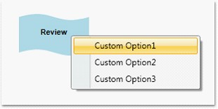

Essential Diagram for WPF provides support for the display of context menus for nodes and connectors on right-clicking the node or connector. The context menu contains the default commands, Z-order BringToFront, SendToBack, MoveForward, SendBackward, Grouping (Group and Ungroup), and Delete. The context menu can be customized so that you can add some custom options to the context menu. This can be done using the ContextMenu property of the nodes and the line connectors.
The following code snippet illustrates addition of custom options to the context menu.
|
[C#]
Node node1 = new Node(Guid.NewGuid(), "Register"); node1.Shape = Shapes.RoundedSquare; node1.Width = 150; node1.Height = 50; node1.OffsetX = 250; node1.OffsetY = 100;
ContextMenu menu = new ContextMenu(); MenuItem item1 = new MenuItem(); item1.Header = "Custom Option1"; MenuItem item2 = new MenuItem(); item2.Header = "Custom Option2"; MenuItem item3 = new MenuItem(); item3.Header = "Custom Option3"; menu.Items.Add(item1); menu.Items.Add(item2); menu.Items.Add(item3); node1.ContextMenu = menu; |
|
[VB]
Dim node1 As New Node(Guid.NewGuid(), "Register") node1.Shape = Shapes.RoundedSquare node1.Width = 150 node1.Height = 50 node1.OffsetX = 250 node1.OffsetY = 100
Dim menu As New ContextMenu() Dim item1 As New MenuItem() item1.Header = "Custom Option1" Dim item2 As New MenuItem() item2.Header = "Custom Option2" Dim item3 As New MenuItem() item3.Header = "Custom Option3" menu.Items.Add(item1) menu.Items.Add(item2) menu.Items.Add(item3) node1.ContextMenu = menu |
Similarly we can set it for the connectors as follows:
|
[C#]
LineConnector line = new LineConnector(); line.ContextMenu = menu; |
|
[VB]
Dim line As New LineConnector() line.ContextMenu = menu |

Figure 210: Custom Context Menu
The context menu can also be specified for all the nodes on the page using the NodeContextMenu property. Similarly to specify custom context menu for all the lines on the page, the LineConnectorContextMenu property of DiagramView can be used as follows:
|
[C#]
ContextMenu menu1 = new ContextMenu(); MenuItem item11 = new MenuItem(); item11.Header = "Custom Option11"; MenuItem item21 = new MenuItem(); item21.Header = "Custom Option21"; MenuItem item31 = new MenuItem(); item31.Header = "Custom Option31"; menu1.Items.Add(item11); menu1.Items.Add(item21); menu1.Items.Add(item31); diagramView.NodeContextMenu = menu1; diagramView.LineConnectorContextMenu = menu1; |
|
[VB]
Dim menu1 As New ContextMenu() Dim item11 As New MenuItem() item11.Header = "Custom Option11" Dim item21 As New MenuItem() item21.Header = "Custom Option21" Dim item31 As New MenuItem() item31.Header = "Custom Option31" menu1.Items.Add(item11) menu1.Items.Add(item21) menu1.Items.Add(item31) diagramView.NodeContextMenu = menu1 diagramView.LineConnectorContextMenu = menu1 |
 Note: If any node’s context menu is
assigned using the ContextMenu property of that node, then it will take
precedence over the DiagramView’s NodeContextMenu property. The same applies to
Line Connectors.
Note: If any node’s context menu is
assigned using the ContextMenu property of that node, then it will take
precedence over the DiagramView’s NodeContextMenu property. The same applies to
Line Connectors.